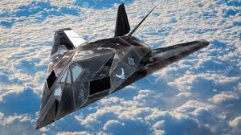
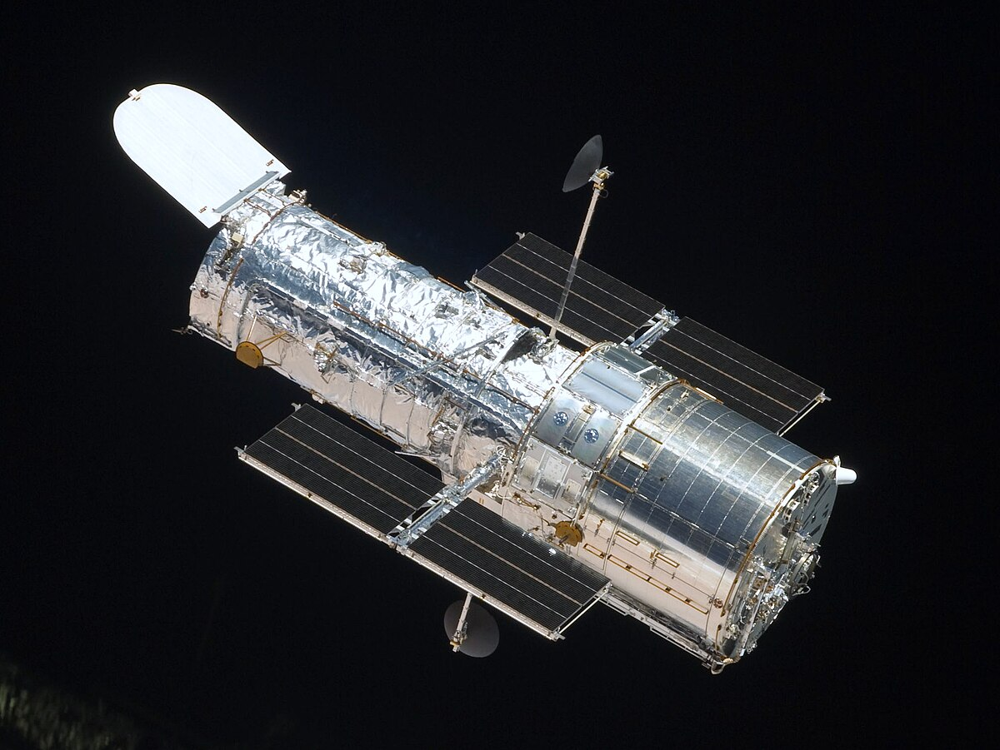
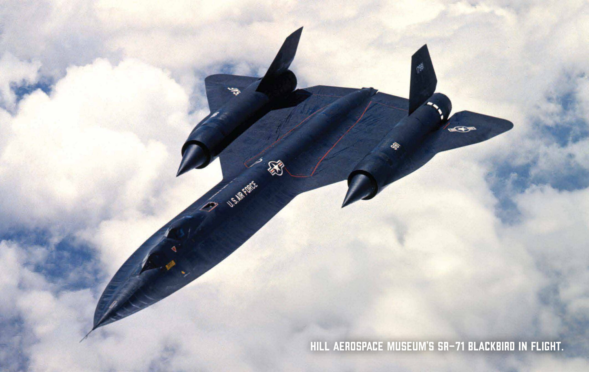

DEFENCE AND AEROSPACE MANUFACTURER
"AHEAD OF READY"
A Brief History of Lockheed Martin
- Founding and Early Years
- 1912 : Allan and Malcolm Loughed founded the Loughead Aircraft Manufacturing Company in San Fransico.
Their first aircraft, the Model G seaplane, was innovative but not commercially successful.
- 1926 : The company was reorganissed as the Lockheed Aircraft Company in Burbank, Californi, producing the successful Vega aircraft,
used by aviators like Amelia Earhart.
- World War II Era (1930s-1940s)
- Lockheed became a key defence contractor, producing aircrafts like the P-38 Lightning and the Hudson Bomber.
- In 1943, Lockheed established the Skunk Works division, focusing on secretive,
innovative projects such as the P-80 Shooting Star, the U.S.’s first operational jet fighter
- Post-War Innovation
- Lockheed diversified into civilian aviation with aircraft like the L-1011 TriStar, a commercial jetliner.
- It also gained fame for iconic military aircraft like the U-2 Dragon Lady and SR-71 Blackbird,
both Skunk Works creations.
- Merger with Martin Marietta (1995)
- Lockheed merged with Martin Marietta, a major aerospace and defense contractor, to form Lockheed Martin.
Martin Marietta, established in 1961, had expertise in missiles, satellites, and space exploration.
- Modern Era (1995-Present)
- Lockheed Martin became a leading defense contractor, producing cutting-edge
technology like the F-22 Raptor, F-35 Lightning II, and space systems such as the Orion spacecraft.
- The company also expanded into missile defense (e.g., the THAAD system)
and advanced technology research, including hypersonics and autonomous systems.
Some Notable Contributions
| Contribution |
Image |
| F117 Night Hawk |
 |
| Hubble Space Telescope |
 |
| SR-71 BlackBird |
 |